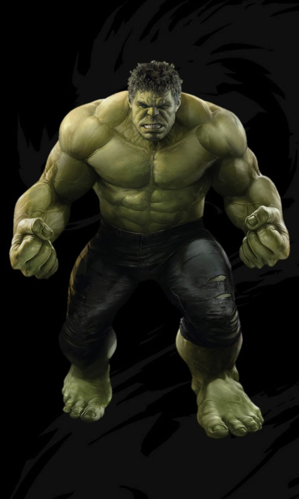

Spider-Man

Spider-Man este unul dintre cei mai cunoscuți supereroi Marvel. Numele său real este Peter Parker.
A apărut pentru prima dată în 1962 și a fost creat de Stan Lee și Steve Ditko.
Puteri: agilitate mare, simțul păianjenului, capacitatea de a se cățăra pe pereți.
Iron Man

Iron Man este Tony Stark, un inventator și miliardar.
El a creat o armură avansată care îi oferă puteri extraordinare.
Puteri: zbor, arme laser, inteligență foarte mare.
Captain America

Captain America este Steve Rogers.
El a devenit super soldat după un experiment în timpul celui de-al Doilea Război Mondial.
Folosește un scut indestructibil din vibranium.
Thor

Thor este zeul tunetului din mitologia nordică.
El este prințul regatului Asgard.
Arma sa principală este ciocanul Mjolnir.
Hulk

Hulk este Bruce Banner, un om de știință.
După un accident cu radiații gamma, el se transformă în Hulk când se enervează.
Are o forță incredibilă.
Black Panther

Black Panther este T'Challa.
El este regele țării Wakanda, o națiune foarte avansată tehnologic.
Costumul său este realizat din vibranium.
>Doctor Strange

Doctor Strange a fost inițial un chirurg celebru.
După un accident, a devenit magician și protector al realității.
Folosește magia pentru a lupta împotriva amenințărilor mistice.